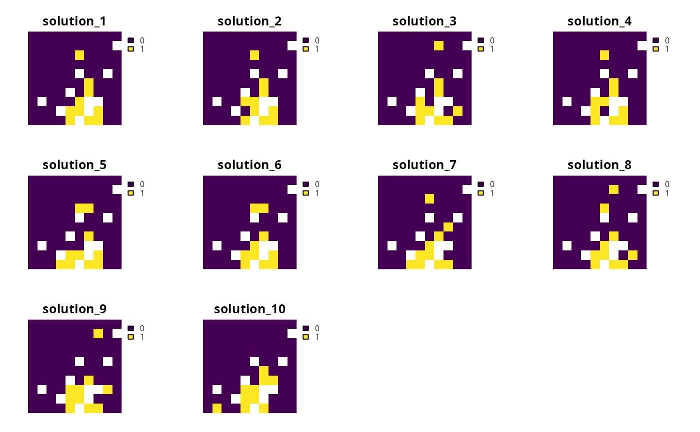
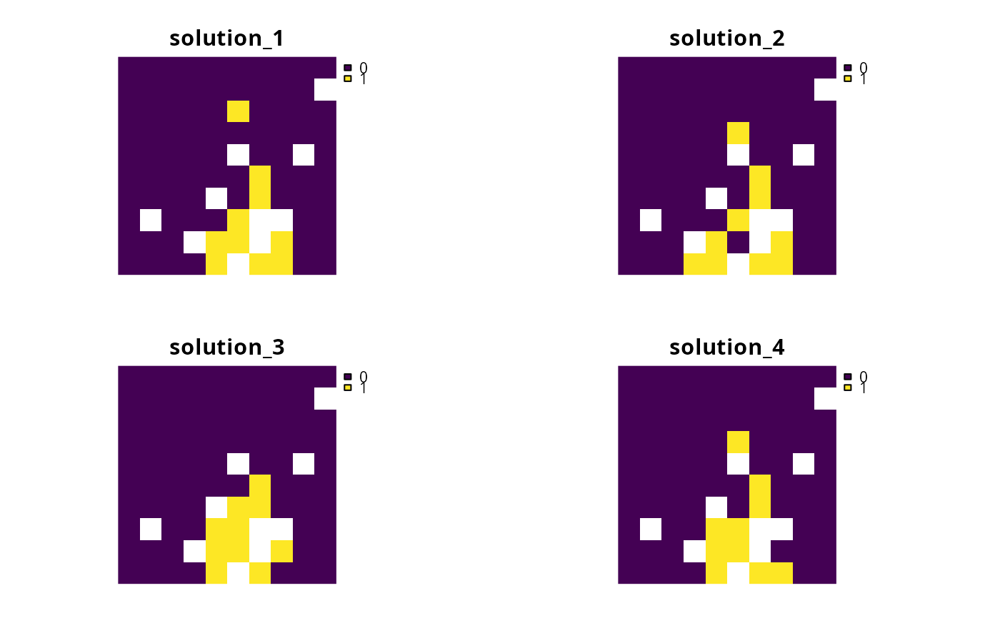

Conservation planners often desire a portfolio of solutions to present to decision makers. This is because conservation planners often do not have access to "perfect" information, such as cost data that accurately reflects stakeholder preferences, and so having multiple near-optimal solutions can be a useful.
All methods for generating portfolios will return solutions that
are within the specified optimality gap. Below are the portfolio methods
that can be added to a ConservationProblem object.
add_default_portfolioGenerate a single solution.
add_cuts_portfolioGenerate a portfolio of solutions using Bender's cuts.
add_shuffle_portfolioGenerate a portfolio of solutions by randomly reordering the data prior to attempting to solve the problem.
constraints, decisions,
objectives penalties, problem,
solvers, targets.
# load data data(sim_pu_raster, sim_features) # create problem p <- problem(sim_pu_raster, sim_features) %>% add_min_set_objective() %>% add_relative_targets(0.1) %>% add_binary_decisions() %>% add_default_solver(gap = 0.2, verbose = FALSE) # create problem with cuts portfolio p1 <- p %>% add_cuts_portfolio(4) # create problem with shuffle portfolio p2 <- p %>% add_shuffle_portfolio(4) # solve problems and create portfolios of solutions within 20 % of optimality # using different emthods s <- list(solve(p1), solve(p2))#> Optimize a model with 5 rows, 90 columns and 450 nonzeros #> Variable types: 0 continuous, 90 integer (90 binary) #> Coefficient statistics: #> Matrix range [2e-01, 9e-01] #> Objective range [2e+02, 2e+02] #> Bounds range [1e+00, 1e+00] #> RHS range [3e+00, 7e+00] #> Found heuristic solution: objective 2145.27 #> Presolve time: 0.00s #> Presolved: 5 rows, 90 columns, 450 nonzeros #> Variable types: 0 continuous, 90 integer (90 binary) #> Presolved: 5 rows, 90 columns, 450 nonzeros #> #> #> Root relaxation: objective 1.726522e+03, 11 iterations, 0.00 seconds #> #> Nodes | Current Node | Objective Bounds | Work #> Expl Unexpl | Obj Depth IntInf | Incumbent BestBd Gap | It/Node Time #> #> 0 0 1726.52215 0 4 2145.26789 1726.52215 19.5% - 0s #> #> Explored 1 nodes (11 simplex iterations) in 0.00 seconds #> Thread count was 1 (of 4 available processors) #> #> Solution count 1: 2145.27 #> #> Optimal solution found (tolerance 2.00e-01) #> Best objective 2.145267891035e+03, best bound 1.726522151579e+03, gap 19.5195% #> Warning for adding variables: zero or small (< 1e-13) coefficients, ignored #> Optimize a model with 6 rows, 90 columns and 461 nonzeros #> Variable types: 0 continuous, 90 integer (90 binary) #> Coefficient statistics: #> Matrix range [2e-01, 2e+00] #> Objective range [2e+02, 2e+02] #> Bounds range [1e+00, 1e+00] #> RHS range [3e+00, 1e+01] #> Found heuristic solution: objective 2192.26 #> Presolve time: 0.00s #> Presolved: 6 rows, 90 columns, 461 nonzeros #> Variable types: 0 continuous, 90 integer (90 binary) #> Presolved: 6 rows, 90 columns, 461 nonzeros #> #> #> Root relaxation: objective 1.726522e+03, 11 iterations, 0.00 seconds #> #> Nodes | Current Node | Objective Bounds | Work #> Expl Unexpl | Obj Depth IntInf | Incumbent BestBd Gap | It/Node Time #> #> 0 0 1726.52215 0 4 2192.25508 1726.52215 21.2% - 0s #> H 0 0 1792.7738341 1726.52215 3.70% - 0s #> #> Explored 1 nodes (11 simplex iterations) in 0.01 seconds #> Thread count was 1 (of 4 available processors) #> #> Solution count 2: 1792.77 2192.26 #> #> Optimal solution found (tolerance 2.00e-01) #> Best objective 1.792773834063e+03, best bound 1.726522151579e+03, gap 3.6955% #> Warning for adding variables: zero or small (< 1e-13) coefficients, ignored #> Optimize a model with 7 rows, 90 columns and 470 nonzeros #> Variable types: 0 continuous, 90 integer (90 binary) #> Coefficient statistics: #> Matrix range [2e-01, 2e+00] #> Objective range [2e+02, 2e+02] #> Bounds range [1e+00, 1e+00] #> RHS range [3e+00, 1e+01] #> Found heuristic solution: objective 2218.62 #> Presolve time: 0.00s #> Presolved: 7 rows, 90 columns, 470 nonzeros #> Variable types: 0 continuous, 90 integer (90 binary) #> Presolved: 7 rows, 90 columns, 470 nonzeros #> #> #> Root relaxation: objective 1.726922e+03, 12 iterations, 0.00 seconds #> #> Nodes | Current Node | Objective Bounds | Work #> Expl Unexpl | Obj Depth IntInf | Incumbent BestBd Gap | It/Node Time #> #> 0 0 1726.92222 0 4 2218.62220 1726.92222 22.2% - 0s #> H 0 0 1790.3782232 1726.92222 3.54% - 0s #> #> Explored 1 nodes (12 simplex iterations) in 0.01 seconds #> Thread count was 1 (of 4 available processors) #> #> Solution count 2: 1790.38 2218.62 #> #> Optimal solution found (tolerance 2.00e-01) #> Best objective 1.790378223248e+03, best bound 1.726922222654e+03, gap 3.5443% #> Warning for adding variables: zero or small (< 1e-13) coefficients, ignored #> Optimize a model with 8 rows, 90 columns and 479 nonzeros #> Variable types: 0 continuous, 90 integer (90 binary) #> Coefficient statistics: #> Matrix range [2e-01, 2e+00] #> Objective range [2e+02, 2e+02] #> Bounds range [1e+00, 1e+00] #> RHS range [3e+00, 1e+01] #> Found heuristic solution: objective 2218.62 #> Presolve time: 0.00s #> Presolved: 8 rows, 90 columns, 479 nonzeros #> Variable types: 0 continuous, 90 integer (90 binary) #> Presolved: 8 rows, 90 columns, 479 nonzeros #> #> #> Root relaxation: objective 1.733689e+03, 15 iterations, 0.00 seconds #> #> Nodes | Current Node | Objective Bounds | Work #> Expl Unexpl | Obj Depth IntInf | Incumbent BestBd Gap | It/Node Time #> #> 0 0 1733.68939 0 6 2218.62220 1733.68939 21.9% - 0s #> H 0 0 1790.8682527 1733.68939 3.19% - 0s #> #> Explored 1 nodes (15 simplex iterations) in 0.00 seconds #> Thread count was 1 (of 4 available processors) #> #> Solution count 2: 1790.87 2218.62 #> #> Optimal solution found (tolerance 2.00e-01) #> Best objective 1.790868252717e+03, best bound 1.733689385637e+03, gap 3.1928% #> Optimize a model with 5 rows, 90 columns and 450 nonzeros #> Variable types: 0 continuous, 90 integer (90 binary) #> Coefficient statistics: #> Matrix range [2e-01, 9e-01] #> Objective range [2e+02, 2e+02] #> Bounds range [1e+00, 1e+00] #> RHS range [3e+00, 7e+00] #> Found heuristic solution: objective 2145.27 #> Presolve time: 0.00s #> Presolved: 5 rows, 90 columns, 450 nonzeros #> Variable types: 0 continuous, 90 integer (90 binary) #> Presolved: 5 rows, 90 columns, 450 nonzeros #> #> #> Root relaxation: objective 1.726522e+03, 11 iterations, 0.00 seconds #> #> Nodes | Current Node | Objective Bounds | Work #> Expl Unexpl | Obj Depth IntInf | Incumbent BestBd Gap | It/Node Time #> #> 0 0 1726.52215 0 4 2145.26789 1726.52215 19.5% - 0s #> #> Explored 1 nodes (11 simplex iterations) in 0.00 seconds #> Thread count was 1 (of 4 available processors) #> #> Solution count 1: 2145.27 #> #> Optimal solution found (tolerance 2.00e-01) #> Best objective 2.145267891035e+03, best bound 1.726522151579e+03, gap 19.5195% #> Optimize a model with 5 rows, 90 columns and 450 nonzeros #> Variable types: 0 continuous, 90 integer (90 binary) #> Coefficient statistics: #> Matrix range [2e-01, 9e-01] #> Objective range [2e+02, 2e+02] #> Bounds range [1e+00, 1e+00] #> RHS range [3e+00, 7e+00] #> Found heuristic solution: objective 2247.38 #> Presolve time: 0.00s #> Presolved: 5 rows, 90 columns, 450 nonzeros #> Variable types: 0 continuous, 90 integer (90 binary) #> Presolved: 5 rows, 90 columns, 450 nonzeros #> #> #> Root relaxation: objective 1.726522e+03, 11 iterations, 0.00 seconds #> #> Nodes | Current Node | Objective Bounds | Work #> Expl Unexpl | Obj Depth IntInf | Incumbent BestBd Gap | It/Node Time #> #> 0 0 1726.52215 0 4 2247.37975 1726.52215 23.2% - 0s #> H 0 0 1787.2888568 1726.52215 3.40% - 0s #> #> Explored 1 nodes (11 simplex iterations) in 0.00 seconds #> Thread count was 1 (of 4 available processors) #> #> Solution count 2: 1787.29 2247.38 #> #> Optimal solution found (tolerance 2.00e-01) #> Best objective 1.787288856799e+03, best bound 1.726522151579e+03, gap 3.3999% #> Optimize a model with 5 rows, 90 columns and 450 nonzeros #> Variable types: 0 continuous, 90 integer (90 binary) #> Coefficient statistics: #> Matrix range [2e-01, 9e-01] #> Objective range [2e+02, 2e+02] #> Bounds range [1e+00, 1e+00] #> RHS range [3e+00, 7e+00] #> Found heuristic solution: objective 2056.4 #> Presolve time: 0.00s #> Presolved: 5 rows, 90 columns, 450 nonzeros #> Variable types: 0 continuous, 90 integer (90 binary) #> Presolved: 5 rows, 90 columns, 450 nonzeros #> #> #> Root relaxation: objective 1.726522e+03, 11 iterations, 0.00 seconds #> #> Nodes | Current Node | Objective Bounds | Work #> Expl Unexpl | Obj Depth IntInf | Incumbent BestBd Gap | It/Node Time #> #> 0 0 1726.52215 0 4 2056.39948 1726.52215 16.0% - 0s #> #> Explored 1 nodes (11 simplex iterations) in 0.00 seconds #> Thread count was 1 (of 4 available processors) #> #> Solution count 1: 2056.4 #> #> Optimal solution found (tolerance 2.00e-01) #> Best objective 2.056399476440e+03, best bound 1.726522151579e+03, gap 16.0415% #> Optimize a model with 5 rows, 90 columns and 450 nonzeros #> Variable types: 0 continuous, 90 integer (90 binary) #> Coefficient statistics: #> Matrix range [2e-01, 9e-01] #> Objective range [2e+02, 2e+02] #> Bounds range [1e+00, 1e+00] #> RHS range [3e+00, 7e+00] #> Found heuristic solution: objective 2032.98 #> Presolve time: 0.00s #> Presolved: 5 rows, 90 columns, 450 nonzeros #> Variable types: 0 continuous, 90 integer (90 binary) #> Presolved: 5 rows, 90 columns, 450 nonzeros #> #> #> Root relaxation: objective 1.726522e+03, 11 iterations, 0.00 seconds #> #> Nodes | Current Node | Objective Bounds | Work #> Expl Unexpl | Obj Depth IntInf | Incumbent BestBd Gap | It/Node Time #> #> 0 0 1726.52215 0 4 2032.97772 1726.52215 15.1% - 0s #> #> Explored 1 nodes (11 simplex iterations) in 0.00 seconds #> Thread count was 1 (of 4 available processors) #> #> Solution count 1: 2032.98 #> #> Optimal solution found (tolerance 2.00e-01) #> Best objective 2.032977722833e+03, best bound 1.726522151579e+03, gap 15.0742%# plot solutions from cuts portfolio plot(s[[1]], axes = FALSE, box = FALSE)# plot solutions from cuts portfolio plot(s[[2]], axes = FALSE, box = FALSE)